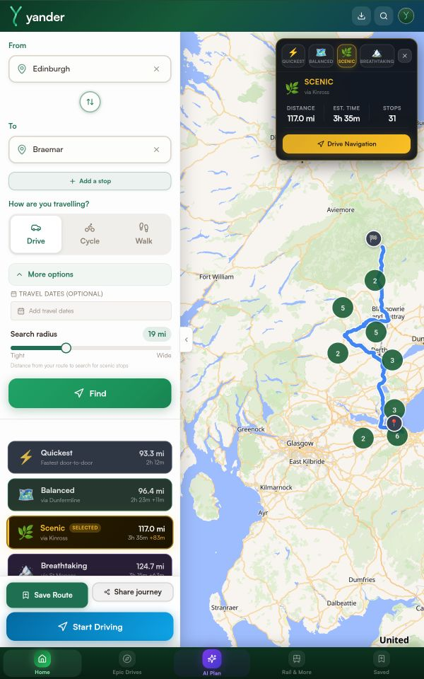
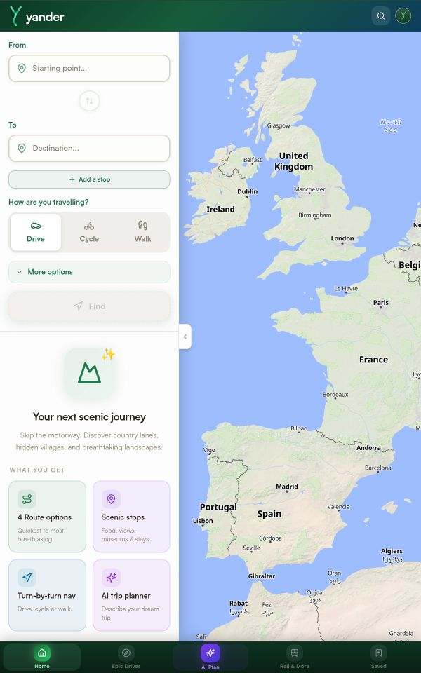
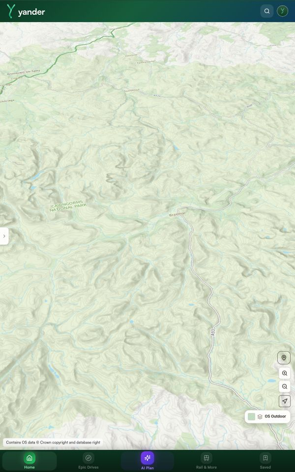
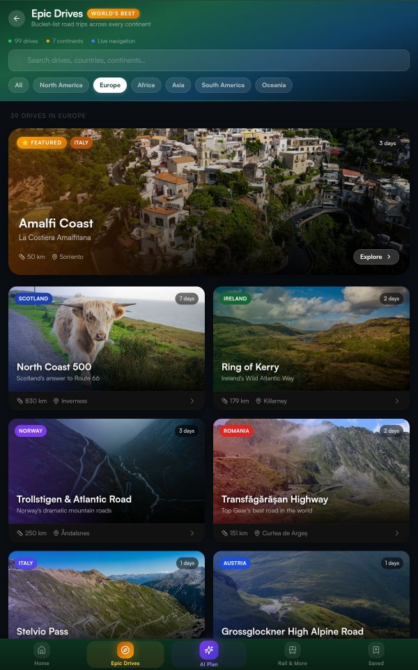

Scenic by default
Pick a start, pick a destination, pick a mood — scenic, quiet, coastal. Yander finds the route the GPS won't show you. Viewpoints, villages, woodland, coast. Always with an honest ETA.
A guidebook for the road less taken · Launching 2026
A scenic route planner for drivers, cyclists, and walkers — built in Britain. We plan the long way home, on purpose. Three modes, one philosophy: the journey is at least as good as the destination, and probably better.
Issue 01 · Spring 2026 · The route less taken
The good stuff in Britain isn't on the M40. It's two miles up a single-track lane, a pub with no website, a coastal view that took a wrong turn to find.
We plan the long way home, on purpose.
Three modes · one philosophy
Pick a start, pick a destination, pick a mood — scenic, quiet, coastal. Yander finds the route the GPS won't show you. Viewpoints, villages, woodland, coast. Always with an honest ETA.
Drive mode with calm voice prompts, big legible glances, and background location that won't drop when a call comes in. A co-pilot for the back roads, not a chaperone.
Every Yander is saved to your library. Drop pins, write notes, share with whoever you'd take along. Ready for next Sunday — or the Sunday after that.
From the field
Distance, time and stops at a glance. One tap to drive navigation. The route isn't just shown — it's understood. Pre-launch screens shown; final UI improving daily.




The fine print, made interesting
Yander runs on the same foundations the AA, the OS App and the National Trust lean on. Open data for the world. Ordnance Survey detail for Britain. And routing engines we host ourselves, so your journey isn't telemetry for somebody else.
OpenStreetMap base layer for the world, Ordnance Survey detail for Britain — bridleways, byways, contours, Crown-copyright topography.
OSRM and Valhalla — self-hosted engines we run ourselves. Your route is calculated on our infrastructure, not sold on as analytics fodder.
Wikipedia and Wikimedia Commons for the stories behind a viewpoint, a stone circle, a village with two letters in the name.
Built in Britain. Hosted in London. Independent — no investor pressure, no growth-at-all-costs, no advertising. Just a subscription.
A subscription, plain and simple
Yander Free is a generous 50-mile sandbox forever — no card. When you're ready for the whole country, Yander Premium unlocks every mile, every mode, every map layer we've built. Founder pricing locks for the life of your subscription.
Free
£0/ no card
Premium
£3.99/ month
or £34.99 / year · save 27%
7-day trial · cancel any time · UK consumer cooling-off applies
One honest price. No tiers, no upsells, no discount codes — what keeps Yander independent and the lights on the lanes.
A letter from the founder
I started Yander because every other map app routes me onto a dual carriageway. The good stuff in Britain — the pubs, the views, the villages with two letters in the name — is on the lanes. Yander is for people who'd rather arrive an hour late with a story than on time with none.
Join the waitlist. We'll send a postcard when we're live — and founder pricing locks in for everyone on the list. No spam, no growth-hacker noise, no five-emails-a-week.